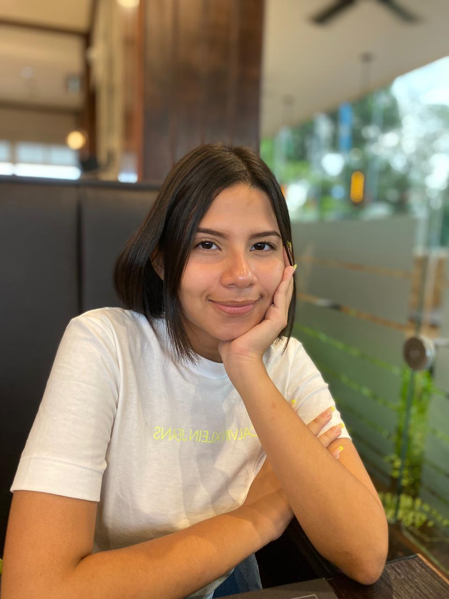

Yadira Lara
Yadira Lara 
Soy una programadora especializada en la creación de sitios web, mi trabajo hace que las personas tengan presencia en internet como estrategias online y y sirve para que las empresas que contratan mis servicios pueden darse a conocer, es decir, su marca, sus productos y los servicios que ofrecen.
Características como programadora:
-Prestar atención a los detalles.
-Soy analítica y lógica en el enfoque para la solución de problemas.
-Administrar el tiempo de forma eficiente, priorizar tareas y trabajar bajo la presión de cumplir plazo determinados.
-Estar siempre al día sobre la evolución de los lenguajes de software y de programación, así como de las nuevas herramientas informáticas.
Características en mis paginas webs:
-Contenido útil y fácil de entender.
-Diseño atractivo.
-Adaptable a todos los dispositivos móviles.